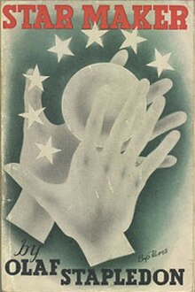
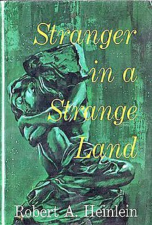
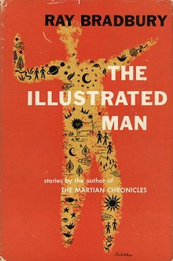

Course: Science Fiction & Religion
Lecture #1: Theology Through Time & Space -- Introduction
This course will attempt to show how religion or religious ideas are present in much of science fiction, even if the story is not specifically about religion.
We will, by necessity, use religious ideas in the broadest sense in dealing with how religions develop, ethics, what makes a being sentient, pseudo religion, ie religion which mimics religion, concepts of messiah figures and the end of the universe or, on a smaller scale, Earth or other worlds.
Through novels, short stories and film we will try to deal with these thematically. I recognize that we cannot do all the possible stories or films dealing with these subjects, but I have taken what I believe are good examples from many genres.
The supplementary bibliography is made up of those stories that I don't have time to deal with but are good reading in these areas. I am happy to have any other suggestions as I recognize I am not totally versed in these areas so any book, story, or movie that you might like to add to this supplementary bibliography will be gladly accepted. (I feel free to change this course if needed when I teach it later).
Now to some preliminary definitions and understandings needed to pursue Theology through time and space:
RELIGION
There are many theories about where and how religions can begin but the fact is, we don't really know. What we do know is that on Earth even Neanderthal believed something for graves have been found with the corpse buried in a fetal position and objects around the person.
Speculation abounds @ religions beginning. Archeological evidence suggests that the first gods were women, probably because she was the life giver and, until the beginnings of agriculture some 10,000 years ago there is no evidence that the male’s contribution to progeny was known. (6500 BC-Catel Hayek)
Was it fear? Awe? or maybe even gratefulness that produced worship? We honestly don't know.
Now in the class we will watch 1 possibility from Beneath the planet of the Apes 9 min.
Here however are a few definitions from various academic fields as to what religion is, followed by some Marks we can see in all religions.
Anthropology, (Clifford Geertz) believes that religion is a symbol system which acts to establish powerful, pervasive and long-lasting moods and motivations in people by forming a conception
of a general order of existence which is considered to be "reality" to those involved. Needless to say, even on Earth not everyone’s view of "reality" is the same
Sociology basically agrees with anthropology but sees the social cohesiveness that is produced by religion and its rituals and myths as binding a group of people together. In other words, religion is seen as strictly functional.
Psychology - Wm. James in his Varieties of Religious Experience (1st decade of this cent.) defined religion as "The feeling, acts and experiences of individuals in their solitude so far as they apprehend themselves to stand in relation to whatever they consider divine."
My definition (basic) might be the ULTIMATE CONCERN of any given being. or, more explicitly, the most deeply gripping and most persistently governing attitudes, beliefs, and endeavors of a being or group in response to the yearning for reconciliation with Reality or else an ideal situation, which is regarded as bringing the highest fulfillment because it is regarded as the highest value.
MARKS OF RELIGION
This is not an exhaustive list but here are some common characteristics of religion, at least here on Earth.
Supreme object of loyalty -- not necessarily a deity but can be principles (the eightfold path of Buddhism), or equality of all humanity (communism).
Faith -- a necessary ingredient if one is to devote their life to something to the exclusion of other things.
Revelation -- some intuitive source, or experience of immediacy of the absolute, thru which beliefs and values are accepted & known.
Beliefs -- may be implicit as well as overt. deal with view of the universe and one’s place therein as well as destiny of the individual or cosmos. myths are part of this system.
Patterns of Devotion -- has to do with ways of physical and mental response toward the supreme object which are regularly repeated, ie, ritual.
Felt moral demands -- whatever exerts an attitude of what one should or should not do is part of every religion. there are taboos and requirements in everyone. The problem is not to judge religions by what our brand of morality might be.
Appropriate actions -- The motivation to carry out these moral demands in action. religion energizes beings to act.
Intimations of final attainment -- belief that thru some transformation or action a final fruition will take place.
As we look at this course try to see how these are born out in the various religions we will look at, whether they originate on Earth, or are attempts to see what religion might be on other worlds.
One of the things we have to realize as we do this is the fact that we are inundated with symbols all the time whether we know it or not. Colors, logos, shapes -- all have meanings to us which we take for granted. What it means is that we as humans are basically doomed from the start when trying to project out into space ond onto alien cultures some supposedly new viewpoint. It is almost impossible to perceive of a religion that is not like something here on Earth and we should be aware of this when dealing with attempts to see new religions on other planets. However, we will look at several in the course anyway.
THE HISTORY OF SCIENCE FICTION AND RELIGION
Theologically oriented science fiction has always had a special interest for writers, readers and critics. Works with religious themes have not failed to win acclaim, and many have won awards: Clarke's "The Star" won the Hugo in 1956; A Case of Conscience by James Blish won a Hugo in 1959; Roger Zelazny's Lord of Light a Hugo in 1968, etc. We will be dealing with all of these and others.
Religion is an integral part of our history from the very beginning. combine this with the fact that science fiction depicts the fantastic reality of mind in the universe as we can approach it thru science, speculation and intuition and we see scarce mystery in the appeal of religious science fiction. RELIGION AND SCIENCE FICTION BOTH DEAL IN MATTERS TRANSCENDING
THE EVERYDAY WORLD. Both deal in alternate realities.
Today the fields of science and religion are coming together, particularly in the field of physics with books such as Paul Davies The Mind of God and others such as The Tao of Physics
or The Dancing Wu Li Masters.
The antagonism between science and religion is real only to those who take a narrow view of both, the perfect battle for bigots from both camps. It has even been suggested that religious orientations will undergo fusion with scientific knowledge and philosophy. Our concepts of God may deepen and change when we move into the 21st and 22nd cent. as we examine more intensely the possible models of deity and how we come to form them.
Science Fiction as the art of the hypothetical has been in a unique position to speculate freely about religious concepts. A story is not bound by the strictures of assertion or argument and a writer need not believe in the conditional circumstances of the possibility or impossibility of his/her work.
A writer can hold up their work as meaningful and "something like the truth" - an approach to ideas which could not otherwise be discussed at all. The future is approached as the shadows of POSSIBLE human or more than human experiences as seen from the present. A future need never happen to remain a possibility.
The difference between science fiction and fantasy is that a fantasy story needs only its fictional reality, with no reference to the known world beyond the reality of the human imagination, a place where, some say, lives the second half of the real world.
A CHRONOLGY (MORE OR LESS)
Before WWII, for the most part, most science fiction was largely innocent--or ignorant--about religion. Jules Verne's wonderous voyages showed a concern with religion @ on par with
that of the technological prophets of the 19th cent, as if the technology rather than the transcendent was the ultimate answer to humanities problems.
H. G. Wells was an outspoken atheist, and he saw a world of the future where the notion of the spiritual should have disappeared. Most other followed suit. When religion appeared in their writings it was primeval, sort of the "Thaiti syndrome" mentality as did Hollywood in the 30's.
The one exception was Olaf Stapledon, who in his book The Star Maker (1937) created some of the most sophisticated speculations on the concept of deity. Stapledon shows us dynamic constantly evolving God. Our universe is only one of many that has been created and lies halfway between immature and mature works.

The Star Maker is " …an effulgent star. . .the center of a four-dimensional sphere whose curved surface was the three dimensional cosmos.” Stapledon's creator is a divinity in the full sense. It is only in philosophical works from Charles Hartshorne and others that a comparable view comes.
Following WWII, it became clear that science did NOT have every answer and science then began becoming more open to religion. Many pseudo-scholarly works came out trying to explain things like the parting of the Red sea by an asteroid passing close (Velikovsky Worlds in Collision). This still happens as Daniken's Chariots of the Gods showed in 1970.
C. S. Lewis showed that the world of fantasy (The Chronicles of Narnia) and Science fiction (Out of the Silent Planet, Perelandra, and That Hideous Strength) were not incompatible with his deep conservative Christian faith.
I will not be dealing with these because of their polemical nature. It is interesting to note, however, that Lewis's Prelandrans had never fallen from primordial grace and thus retained special powers which humans lost in the fall upon leaving Eden. A very different interpretation than Blish got in his A Case of Conscience. (will discuss later)
In the 50's, science fiction novelists like to dwell on humankinds nature and future. A. C. Clarke, Walter Miller, et. al have projected our end in various ways. We will deal with these the last two weeks.
Robert Heinlein attempted, in 1951, to see the future in The Day After Tomorrow but, though a good book, it pales beside his prophetic classic Stranger in A Strange Land which we will spend most of a class on later.

If A.C. Clarke and Robert Heinlein are masters of the novel in the area of religious science fiction, Ray Bradbury is master of the shorter stories. His story "The Man" is still the best variation on 2 old Christian themes; the search for the historical Jesus and speculation @ whether Christ might repeat his mission on other worlds. We will watch clips from his Martian chronicles later.

The last 30 years have seen a blooming of science fiction in the area of Religion. Frank Herbert's DUNE (6 volumes) will have a class all its own. Marge Piercy's He, She and It (1991) deals with do goloms/cyborgs have souls. However, she also is seeing about 70 or 80 years in the future when we will all be hooked to computers and the multinationals will run the world. Her vision is scary but one of the best I've seen concerning the possible near future.
During the 60's many new stories have come out using other than western religions as a basis for a world view. Such as Zelazney's Lord of Light and Clarkes "Nine Billion Names of God" and Brunners "The Viatanuls" We will deal with these in their appropriate place.
Movies and shows, some very pessimistic, some funny, showing our end or at least the future in speculative ways have proliferated. Everything from the coming of the Antichrist (like the Omen, et al.) to "Hitchhikers Guide to the Galaxy" in which the world is destroyed to make way for an intergalactic highway. Not to mention "Planet of the Apes".
To conclude this section: If we wish to become observers in the speculative realm, we must learn to look thru the innocent eyes of science fiction where no reversal is unthinkable. In time we may well come to see that reality is stranger and more wonderfully fantastic than all our images of the past; and no less startling may be the reality now expressed by the religious imagination.
SHOW CLIP:
- Star Trek “Adonis” clip "Chariots on the God's theory" From Classic trek "Adonis"
- "Who watches the Watchers” – The reverse of Adonis (Season 3, Ep. 4 -- start by 2:45)